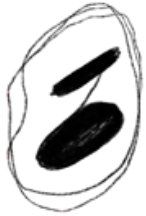

- Официальные релизы:
- 1999 – The UNB «Daskleinewunderkillerboogie. 15 лет экзальтации» - 12 песен из 21
- 2000 – The UNB «Ну и кто это сделал?»
- 2001 – The UNB «Сосок муравьеда»
- 2002 – Любовь и спорт «Любовь и спорт»
- 2007 – Gurzuf «Несуществующее кино»
- 2008 – Серебряная свадьба «Концерт в чулане»
- 2009 – Петля пристрастия «Всем доволен»
- 2010 – Rockerjoker «3»
- 2010 – Серебряная свадьба «Le Mixture Pour Le Voyage»
- 2011 – Серебряная свадьба «Сердечная мускулатура»
- 2011 – Rockerjoker «Продается планета»
- 2012 – Серебряная свадьба «Laterna Magica»
- 2013 – Gurzuf «Marchen»
- 2014 – Серебряная свадьба «Ag»
- 2015 – Серебряная свадьба «Музыка – всё!»
- 2015 – Серебряная свадьба «Adieu La Tete»
- 2018 – Чёрная ленточка «Первый»
- 2019 – Чёрная ленточка «Сказки»
- 2020 – Чёрная ленточка «Родной»
- 2020 – Кассиопея «По колено в любви»
- 2022 - Чёрная Ленточка — "Родинасмерть"
- 2022 - Колорит Кульмана + Артём Залесский - "Заржасм"
- 2022 - Кубарь - "Белый"
- 2022 - Кубарь - "Чëрный"
- 2023 - Кассиопея - "Потолок"
- Участие в отдельных треках:
- 2010 – Трибьют «Васька Ж.Ы.В.!» – The UNB “Шура-дура”, “Аэлита”
- 2014 – Трибьют "Ляпис Crew: Трубьют, Vol.2" - Серебряная свадьба «Les Hirondelles»
- 2017 - Сборник "Нерасстраляныя" - Сьвятлана Бень "У шэрым змроку"
- 2019 - Катя Яровая. Трибьют - Светлана Бень «То живу я в доме этом...»
- 2020 – Сборник "Не выходя из дома" - Бенька "Прощай, Тур де Франс!"
- 2021 – Акварель "Лес" песни 3,5,7,10
- 2021 – Сборник "СмешКаверФест" - Светлана Бень "Право на одиночество"
